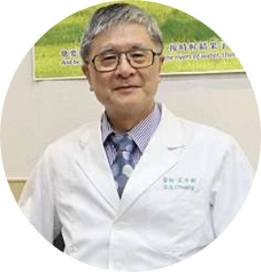
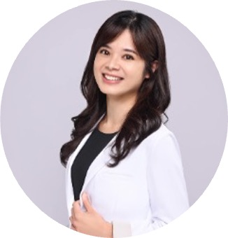
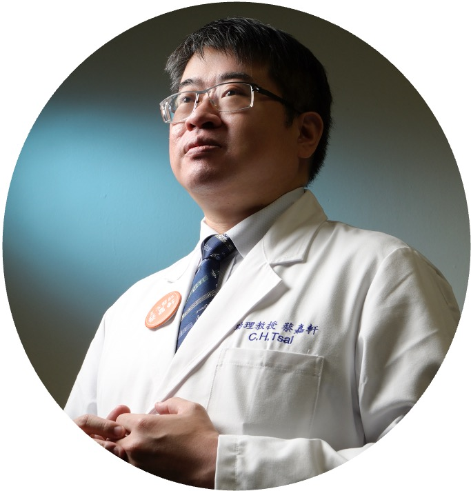

Faculty
Professional attending physicians combining rich clinical experience with innovative research achievements
Senior Attending Physicians
J.Y. Yang, MD
Senior Attending Physician
Plastic surgery expert specializing in acute burn treatment and reconstruction. With over 30 years of clinical experience, dedicated to scar treatment and functional reconstruction, a pioneer in Taiwan's burn medicine.

S.S. Chuang, MD
Senior Attending Physician
Plastic surgery expert specializing in acute burn treatment and reconstruction. With over 30 years of clinical experience, dedicated to scar treatment and functional reconstruction, a pioneer in Taiwan's burn medicine.
Attending Physicians
Y.T. Lin, MD
Director of Surgery
World-renowned hand surgery expert dedicated to finger joint microsurgical reconstruction. Has served as chairman of multiple surgical medical associations in Taiwan, with rich academic and clinical experience.

C.I. Yen, MD
Director of General Plastic Surgery
A leading specialist in acute and severe burn reconstruction, with expertise in challenging rhinoplasty. Skilled in facial burn reconstruction and aesthetic restoration, she pioneers personalized, computer-assisted 3D‑printed surgical guides, achieving innovative breakthroughs in nasal reconstruction outcomes.
S.Y. Chang, MD
Director of Burn Center
Specializes in eyelid surgery, minimally invasive cosmetic procedures, liposuction, hyperhidrosis, and scar treatment, with dedicated efforts in burn reconstruction and patient care, possessing extensive clinical and teaching experience.

C.H. Tsai, MD
Education Committee Member
Specializes in scar reconstruction surgery with significant contributions to keloid treatment, being the first in Taiwan to use the novel cocktail therapy for keloids, and dedicated to burn and trauma reconstruction with extensive clinical and teaching experience.
S.Y. Yang, MD
Attending Physician
Specializes in severe burn care, combining expertise in general cosmetic surgery and laser treatments. Actively involved in skin cancer and burn reconstruction surgeries, with extensive clinical and teaching experience.
S.H. Mao, MD
Physician Researcher
Burn expert specializing in burn wound assessment and treatment planning. Actively participates in clinical research and academic activities.
S.H. Kwon, MD
Attending Physician
Emergency care expert specializing in first-line acute burn treatment. Excellent performance in emergency and ward care.

C.J. Huang, MD
Attending Physician
AI medical expert leading the development of intelligent burn diagnosis systems. Combining medical expertise with AI technology to advance burn diagnosis modernization.
Residents

C.K. Hsu, MD
6th Year Resident
C.W. Huang, MD
6th Year Resident
W.J. Chang, MD
6th Year Resident
Y.J. Chen, MD
6th Year Resident
Rehabilitation Team

P.H. Wu, MD
Rehabilitation Physician
Specializes in rehabilitation medicine for burn patients, providing comprehensive rehabilitation treatment plans, helping patients restore optimal physical function and quality of life.
C.Y. Su, PT
Physical Therapist
Y.H. Chen, OT
Occupational Therapist
Nursing Team
S.M. Liu, RN
Nurse Practitioner
Specializes in critical burn patient care, with extensive ICU nursing experience, dedicated to providing the most professional critical care services.
L.H. Chen, RN
Ward Nurse
Expert in various burn wound care techniques, familiar with wound management at different stages, providing professional and meticulous wound care for patients.
M.L. Wang, RN
Outpatient Nurse
Specializes in patient and family education, helping establish correct care concepts, providing comprehensive discharge preparation and home care guidance.
H.M. Chang, RN
Head Nurse
Responsible for nursing team management and coordination, ensuring nursing quality and patient safety, with extensive nursing management and team leadership experience.
S.C. Lee, RN
Ward Nurse
Specializes in pain assessment and management for burn patients, helping patients alleviate pain, improving comfort and compliance during treatment.
Y.F. Huang, RN
Nurse Practitioner
Expert in infection control and prevention, ensuring ward environment safety and hygiene, reducing nosocomial infection risks and ensuring patient treatment safety.
H.C. Lin, RN
Outpatient Nurse
Specializes in nursing guidance during rehabilitation, helping patients with rehabilitation training, providing professional rehabilitation nursing and functional recovery guidance.
M.H. Kuo, RN
Ward Nurse
Expert in patient nutritional status assessment and nursing, helping maintain optimal patient nutrition, promoting wound healing and physical recovery.
Nutritionist
M.L. Lu, RD
Clinical Dietitian
Specializes in nutritional assessment and treatment for burn patients, designing personalized nutrition plans, helping patients maintain optimal nutritional status to promote wound healing and physical recovery.
Team Expertise
10+
Attending Physicians
30+
Average Years of Practice
50+
International Journal Papers
1000+
Patients Served Annually